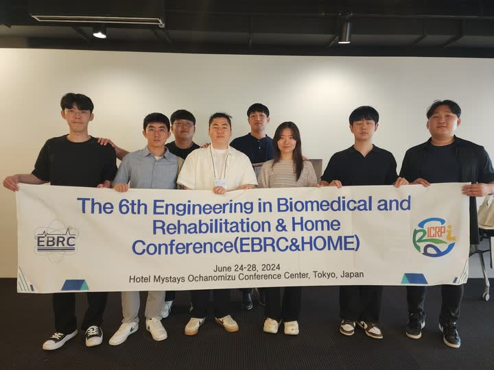
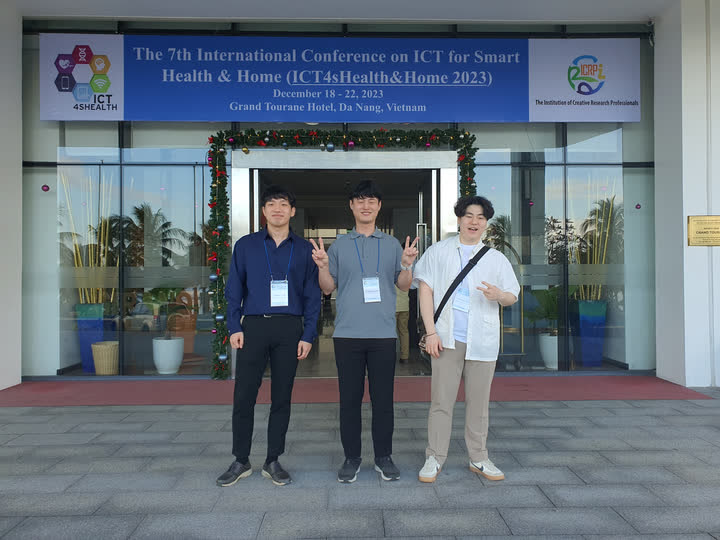

Poster
Data-driven gain tuning for sliding mode control with time-delay estimation applied to robot manipulators
The 23rd IFAC World Congress
Conference talks & posters
Selected oral and poster presentations, with site photos. Newest first.
Poster
Data-driven gain tuning for sliding mode control with time-delay estimation applied to robot manipulators
The 23rd IFAC World Congress


Best Poster Paper Award
Quasi Convex Adaptive Sliding Mode Control Combined with Time-Delay Control for A Human-Assisting Manipulator
The 6th Engineering in Biomedical and Rehabilitation & Home Conference (EBRC&HOME)

Oral presentation
Quasi Convex Adaptive Sliding Mode Control With Time-Varying Disturbances
The 7th International Conference on ICT for Smart Health & Home (ICT4sHealth&Home 2023)